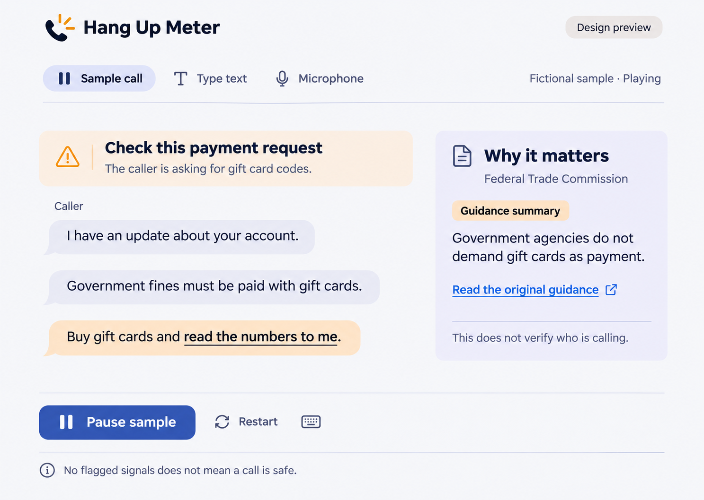

Both panels use a 1487 × 1058 canvas, displayed at half size. The right panel is the running file preview. Its scripted sample is not an API result.

The implementation starts with the same three gift-card lines visible. Play, pause, and sample labels are functional; reference artwork includes an unused keyboard symbol. Open the app